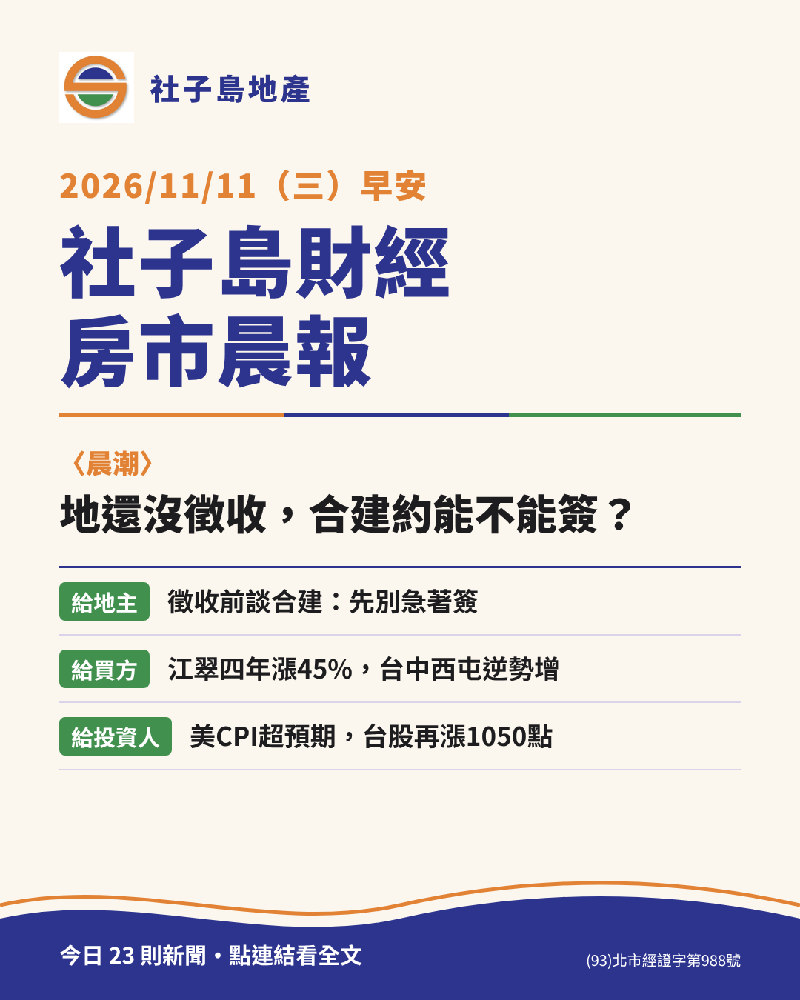

2026/11/11 (三) 早安
社子島財經房市晨報｜地還沒徵收，合建約能不能簽？
今日 23 則財經與房市新聞，依主題分成 9 類，社子島、主商圈與台北市的新聞排在最前面。點標題就能開啟原文。
〈潮汐表〉今天的三道潮水
- 給地主區段徵收還沒公告就來談合建，先看清楚三件事：地要不要先過戶、分到的抵價地怎麼算、等不到時怎麼解約。
- 給買方板橋江翠北側每坪均價四年漲45%；台中前10月交易量減7.4%，西屯卻逆勢增近6成，區域分化明顯。
- 給投資人美國10月CPI高於預期、12月升息兩碼機率升，美股收黑；台股前一日再漲1,050點，外資仍連9日賣超。
〈晨潮〉
地還沒徵收，合建約能不能簽？
昨天在基隆河邊，阿公問我們：「地猶未徵收，就欲佮人簽合建，等分著抵價地才起厝，這款約敢會使簽？愛注意啥物？」先說結論：法律沒有禁止您現在和人談合建，但這種約，是拿一塊「還不知道會變成什麼樣子」的地去談，所以寫在紙上的每一個字，都要比一般合建更清楚。
為什麼說「還不知道」？因為區段徵收是先把整片土地徵收，再重新規劃、重新分配。依《土地徵收條例》第39條，抵價地總面積以徵收總面積的50%為原則，不得少於40%；您能分回多少面積，要看您的權利價值和所選街廓的評定地價；分在哪裡，要等抵價地選配、抽籤決定（這是我們11/7和11/8談過的事）。也就是說，今天簽約的時候，沒有人能告訴您將來那塊地有多大、在哪條路邊、能蓋幾層。一份把分屋比例、坪數寫得很肯定的約，反而要多問一句：這些數字是怎麼算出來的？
第二個要注意的是「地要不要先過戶」。有些預約合建，會要求地主先把土地移轉、或設定抵押給對方。我們11/9說過，徵收補償和抵價地，是發給徵收公告時登記簿上的所有權人；地一旦先過戶，將來領補償、申請抵價地的人就不是您了。另外，依《土地徵收條例》第23條，徵收公告之後，除了繼承、強制執行或法院判決，土地不得分割、合併、移轉或設定負擔。所以，凡是要您「現在先過戶、先設定」的條款，請特別小心。
第三是「選擇權在誰手上」。區段徵收時，地主可以在公告期間內申請領抵價地，也可以領現金補償（第40條）。如果合建約把您綁死「一定要領抵價地」，那麼萬一分配面積未達最小分配面積、或家人意見不同，約要怎麼辦？反過來，如果到時候您想改領現金，又要賠多少？這些都要先寫清楚。
第四是「時間」。社子島的區段徵收計畫，目前仍在內政部審議、尚未公告；從公告、補償、施工到抵價地分配，往往要好幾年。合建約最好寫明：幾年內沒有分配就可以解約、已收的簽約金怎麼退、有沒有履約保證（例如價金信託）、對方公司若易主或解散怎麼處理。
最後是稅。合建分屋本質上是以土地換房屋，地方稅務局曾提醒，地主若列為建照或使照的起造人，可能要申報契稅；土地移轉的增值稅、領回抵價地第一次移轉的減徵，也都和怎麼簽有關。這些請在簽約前，請地政士或會計師依您的情形試算，以稅捐機關認定為準。
徵收前談合建，簽約前問五件事
- ① 面積和位置：分屋比例以「將來分到的抵價地」計算嗎？怎麼算？
- ② 過戶與抵押：有沒有要我現在先移轉或設定給對方？（補償歸公告時的登記所有權人）
- ③ 選擇權：一定要領抵價地嗎？分不到、或想改領現金時怎麼辦？
- ④ 時間與解約：幾年沒進度可以解約？簽約金怎麼退？有沒有履約保證？
- ⑤ 稅：契稅、增值稅誰負擔？簽約前先試算。
今天新聞裡剛好有一則上市公司的合建公告：台中一塊地的地主與建方分配比例，是由兩家估價師事務所分別評估後才定案。一般地主未必需要這麼大的陣仗，但「比例要有依據」這件事，是一樣的。還是那句話：先別急著簽，也別急著拒絕。往下滑，有板橋區段徵收公告與美國通膨的消息；最後在〈廟口泡茶區〉，我們等您來電。
——社子島地產團隊
主商圈：社子島・北士科・關渡洲美平原2 則
社子島本週無新進度：區段徵收計畫仍在內政部審議、尚未核定公告；關渡洲美平原亦無新進度。以下兩則為北士科效應的背景報導，供參考
台北市1 則
北市約67萬戶30年以上老屋若全面都更，專家憂房價推高、年輕人負擔加重，主張以結構安全為改建標準（評論）
市地重劃・區段徵收1 則
新北板橋埔墘4-7區區段徵收案11/11起公告30天，地籍圖與補償清冊陳列5處；想領抵價地，要在公告期間內申請
利率・房貸・資金1 則
外資匯出壓力未消，新台幣一度險破33元，央行進場防守
房市走向6 則
板橋江翠北側每坪均價四年漲45%；北台灣又見28.7坪小基地推案；台中前10月交易量減7.4%、西屯卻增近6成；桃園石門生活圈房價仍在2字頭；高雄農16新案單價衝7字頭；達麗前9月營收增逾3倍
土地・法拍1 則
新應材董事會決議申購彰濱工業區鹿港區約8,400坪土地
都更・合建2 則
富華新子公司與關係人在台中西屯合建分售，地主與建方分配比例由兩家估價師事務所評估；屏東老屋翻新最高補助65%，加開說明會
稅務與法律實務2 則
名下多處自用住宅用地同一天簽約、同一天申報移轉現值，可一起適用土增稅10%；賣自地自建屋適用優惠稅率有條件，其他土地仍依各自持有期間計稅
今日財經大事7 則
美國10月CPI月增0.4%高於預期，12月升息兩碼機率升，美股四大指數收黑，輝達再跌5.47%、台積電ADR逆勢漲2.02%；台股前一日再漲1,050點收42,711點，外資連9日賣超
〈阿公講古〉
週三早上退潮，阿公走到島頭的濕地，泥灘上一隻白鷺鷥慢慢踱步，低頭找東西吃。
「合建喔，以前庄裡嘛有人簽過，」阿公說：「紙寫甲真媠，後來蓋無起來，訂金討無轉來，兄弟仔也冤家。」
他看著白鷺鷥：「伊嘛是等水退了才落去，毋是看著就跳。」
風從河口吹過來，阿公想起里長說的「區段徵收」，說了好幾年，他還是搞不清楚到底要走幾步。阿公皺著眉頭：「社子島的區段徵收，到底愛經過佗幾關？一關一關是按怎行的？」
阿公的問題，我們明天回答。
〈廟口泡茶區〉
阿公從濕地走回廟口，榕樹下的茶已經泡好了。有人來談合建、手上有一份約不知道該不該簽，都可以先坐下來慢慢看。
合建不只是分幾成，更是一份要走好幾年的約：分配依據、解約退款、履約保證，我們陪您一條一條看清楚。
想問問您：如果有人來找您談合建，您最想先問對方的是哪一件事？打個電話告訴我們，我們把大家最在意的問題整理出來。
不急著成交。我們是守在堤邊的人，守著每一塊土地的權益，直到把它交到願意耕耘它的人手上。
📞 歡迎先來電 0922-252-969先通個電話聊聊，再約時間來廟口喝茶。
 掃描 QR code，加 LINE 好友LINE ID：@shezidao💬 加 LINE
掃描 QR code，加 LINE 好友LINE ID：@shezidao💬 加 LINE
社子島地產團隊｜service@shezidao.com.tw
台北市士林區延平北路九段288號
週一至週六 9:30–18:00（週四 9:30–13:30），週日公休📞 來電 0922-252-969
本站由社子島地產開發有限公司經營，為民間不動產資訊網站，非臺北市政府官方網站；政府公告請以臺北市政府與地政局網站為準。
本期新聞由社子島地產團隊自自由時報、591新聞、聯合新聞網、安傳媒、Yahoo股市、經濟日報、鉅亨網、知新聞、中央社、華視新聞網、中時新聞網 等媒體收集，標題照原文，點擊即可開啟原始報導；法規說明僅供參考，實際權利義務以主管機關公告為準。〈晨潮〉〈阿公講古〉為本團隊之參考意見，不構成投資建議，亦不代表支持任何候選人。〈阿公講古〉的阿公，是我們依島上長輩的身影寫成的人物。